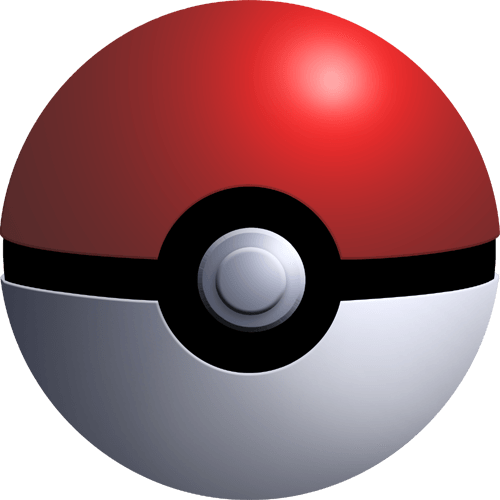
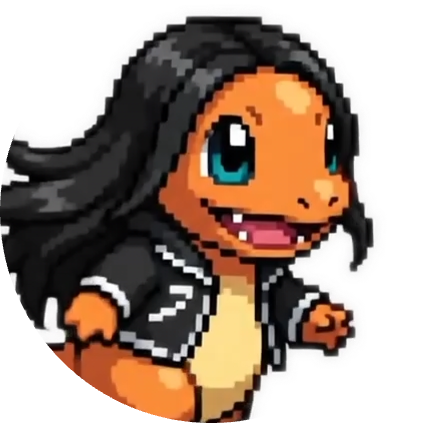
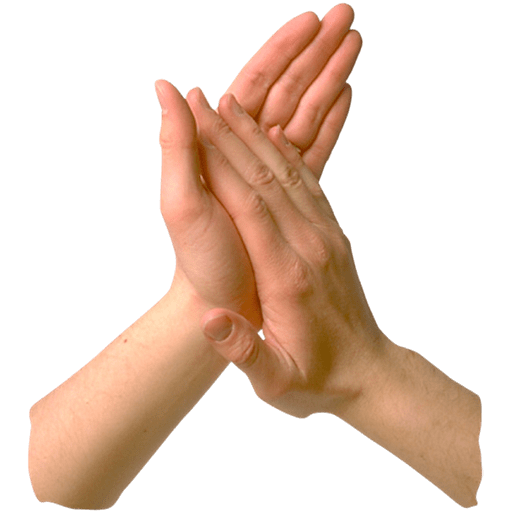
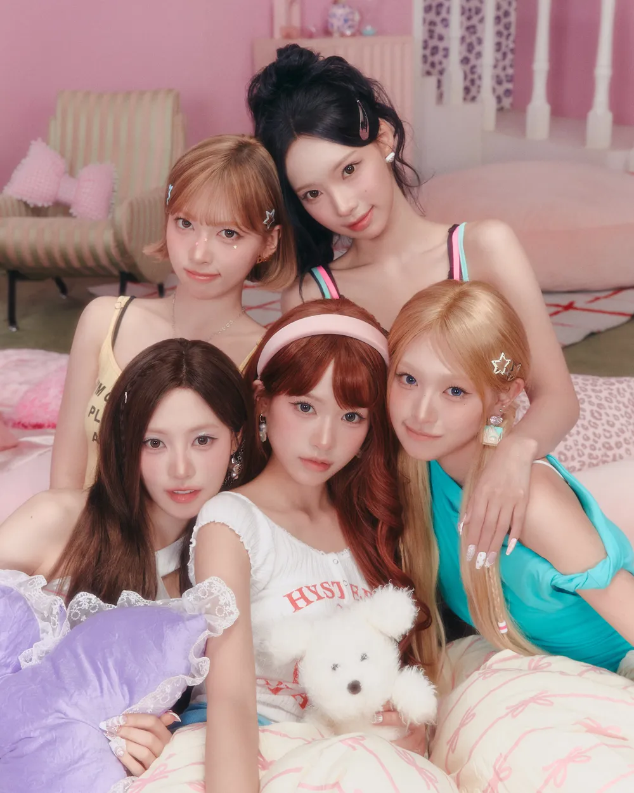

📦

☀️
🖼️배경화면
🔓
◀
🎲
▶
CATEGORY
ALL
SINGLE
EP
OST
좋아요❤️
ALBUM
TRACKLIST
상단 ALBUM SELECT에서 앨범을 선택해주세요.
0
걷기
불꽃세례(feat.거제야호)
오이쉬
메이 개인기
너도? 나도!
RESCENE
SLAP
30
SNARE
30


🤍
50
LP SPEED
3.0s
곡을 선택하세요
0:00
0:00
가사 창
재생목록
좋아요 목록
초기화
트랙리스트에서 곡을 추가해주세요.
재생할 수 없는 곡이에요
이 곡은 현재 재생할 수 없습니다.
새 탭으로 유튜브를 열겠습니까?
항상 허용 (다음부터 이 곡은 자동으로 유튜브로 이동)
아니요
예
🖼️
배경화면 선택
초기화
원하는 배경화면을 최대 4장까지 골라 함께 띄울 수 있어요.
썸네일을 클릭해서 선택/해제하세요 (최대 4장, 화면에 나란히 표시)
배경 이미지에 마우스를 대고 드래그하면 좌우로 움직일 수 있어요.